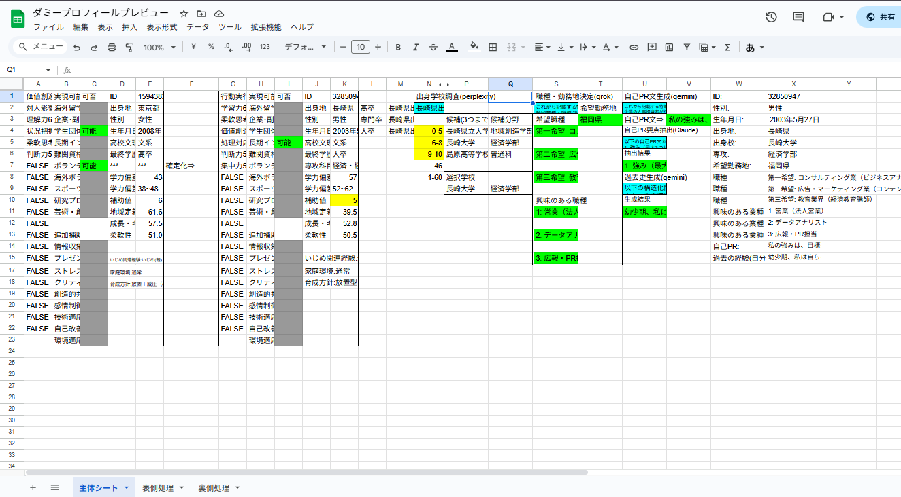
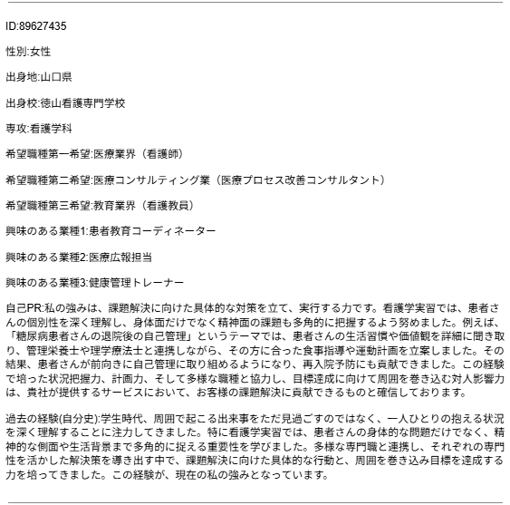

概要
主にランダム関数RAND関数から基礎能力偏差値を基礎能力21種それぞれで生成、そこに学歴(文系理系)、芸術適正(1/2)、 問題解決型等を含む3タイプの基礎補正、家庭環境/いじめを/育児方針の補正を入れた総合能力偏差値と補助項目3種から、強みとなる能力、想定される学歴、 強みにできる補助能力8種・実績10種の実現可否判定を挟み、それらの項目から自動的にプロンプトを生成し、複数のAIを利用することで無尽蔵にプロフィールを量産できる。
作成経緯
AIの活用方法の習得のためのプロフィールをAIで生成する訓練業務に携わるにあたって、
「最初から長所や特筆できる経歴、文系理系等の人の特徴をランダムで生成し、それをプロンプトにできれば効率がいいのでは？」と思い付いたのがきっかけでした。
実際のシート
プレビュー画面
 閲覧用シート意識したポイント
主に意識したポイントは以下の通りです。
- 生成毎に強みの要素を自分で考えて用意するのは難しいため、自由度を持たせつつ無理のない範囲になるような条件･情報を用意しました。
- 能力毎にばらつきを生じさせつつ追加補正を付けることで長所を生成しやすく、また極端に能力が伸びすぎないよう調整しました。
- 無料で使用できるAIには性能に制限があるため、手順毎に最適なAIを利用することでその弱点を緩和を試みています。
- ほぼ全ての関数がRAND,ROUND,RANDBETWEEN,IF/OR,VLOOKUP等の基礎的な物でできており、特殊な関数をほぼ一切使用せずに制作しています。
- AIそれぞれに合わせた質問プロンプトを関数でデータを組み合わせて生成できるようにすることで作業者が質問を考慮する時間の削減に成功しています。
実装結果
実際のダミープロフィール例

これらのようにかなり自然なプロフィールを生成できるようになりました。
また、RAND関数を通じて基礎データをすぐ再生成できるためダミーの量産速度も上がり、質を下げずに特性を考える負担も削減できました。
ただし、この業務は「AIを上手に活用できるようになること」を目的としたもののため、現在は個人使用に留まっていますが必要な機会が訪れれば改良して活用されるかもしれません。
プロフィールの条件設定自体はかなりリアリティが高いため、これを参考に自分の自己PR方法を考えることなどに役立つかもしれません。
考察
RAND関数系を値のみ貼り付けで固定するための範囲を用意し、そこから参照することで今回のプロフィール生成シートが動作している訳ですが、この方法ではシート変更毎に処理が行われて重くならないのか等の懸念が残っています。
今回の生成において、実在学校の検索にperplexity,希望職種の決定考察にgrok,自己PR生成と過去史生成にGemini,過去史生成に必要な自己PRの要点にClaudeとかなりの迂回を行っていますが、
有料AIが使えるのならperplexity以外の部分をGPTに全て置き換えても問題はなさそうだと考察しました。